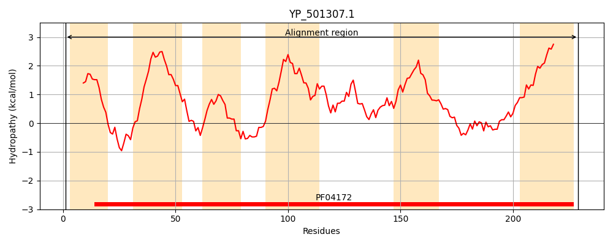
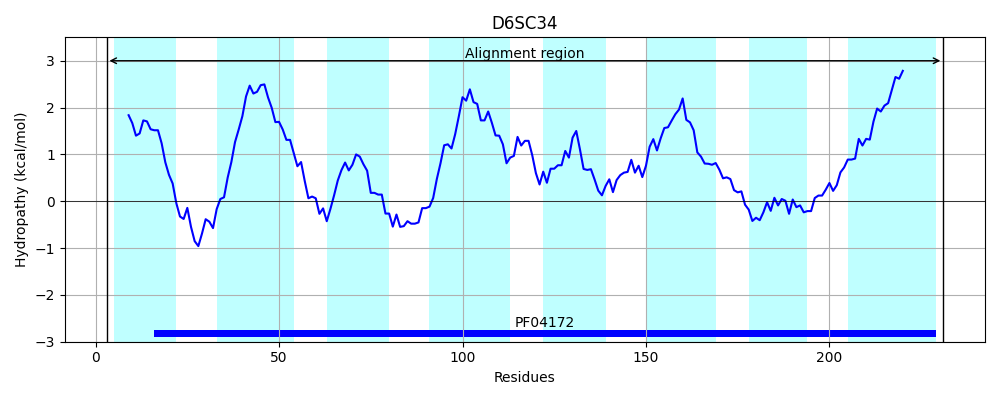
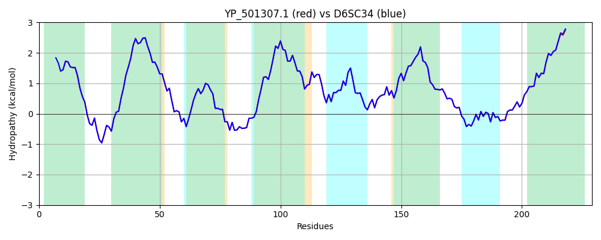

Hit Accession: D6SC34
Hit TCID: 2.A.122.1.2
Hit Description: gnl|BL_ORD_ID|3367 gnl|TC-DB|D6SC34|2.A.122.1.2 Putative TIGR00659 family protein OS=Staphylococcus aureus subsp. aureus MN8 GN=HMPREF0769_10611 PE=4 SV=1
Mach Len: 229
e:0.000000
Query TMS Count : 6
Hit TMS Count: 8
TMS-Overlap Score: 6.200000
Predicted Substrates:CHEBI:22582;antimicrobial agent
BLAST Alignment:
Score: 1132 , Bit scores: 440 bits, E-value: 1.2e-159, Alignment length: 229, Percentage identity: 100
Query: 1 MNDYVQALLMILLTVVLYYFAKRLQQKYPNPFLNPALIASLGIIFVLLIFGISYNGYMKGGSWINHILNATVVCLAYPLYKNREKIKDNVSIIFASVLTGVMLNFMLVFLTLKAFGYSKDVIVTLLPRSITAAVGIEVSHELGGTDTMTVLFIITTGLIGSILGSMLLRFGRFESSIAKGLTYGNASHAFGTAKALEMDIESGAFSSIGMILTAVISSVLIPVLILLFY 229
MNDYVQALLMILLTVVLYYFAKRLQQKYPNPFLNPALIASLGIIFVLLIFGISYNGYMKGGSWINHILNATVVCLAYPLYKNREKIKDNVSIIFASVLTGVMLNFMLVFLTLKAFGYSKDVIVTLLPRSITAAVGIEVSHELGGTDTMTVLFIITTGLIGSILGSMLLRFGRFESSIAKGLTYGNASHAFGTAKALEMDIESGAFSSIGMILTAVISSVLIPVLI+LFY
Sbjct: 3 MNDYVQALLMILLTVVLYYFAKRLQQKYPNPFLNPALIASLGIIFVLLIFGISYNGYMKGGSWINHILNATVVCLAYPLYKNREKIKDNVSIIFASVLTGVMLNFMLVFLTLKAFGYSKDVIVTLLPRSITAAVGIEVSHELGGTDTMTVLFIITTGLIGSILGSMLLRFGRFESSIAKGLTYGNASHAFGTAKALEMDIESGAFSSIGMILTAVISSVLIPVLIILFY 231 | Protein Hydropathy Plots: |
|---|
|  |  |
Pairwise Alignment-Hydropathy Plot:
|
|---|
|  |